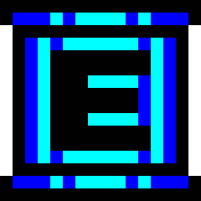

SHIFT
+
CLICK
使用
DEBUG
×
目盛り 0/28
発音 0回
テスト
0% → 回復
1音試聴
連続再生
停止
原音FFT合わせ
実値へ戻す
初期値
デフォルト変更
タイミング
音価
回復速度
ms
音の間隔
ms
ADSR
Attack
Decay
Sustain
Release
切断待ち
EQ
HIGH PASS
ON
OFF
カットオフ
Hz
Q
Q
LOW PASS
ON
OFF
カットオフ
Hz
Q
Q
LOW
PEAK
LOW SHELF
HIGH SHELF
周波数
Hz
ゲイン
Q (PEAK)
Q
MID
PEAK
LOW SHELF
HIGH SHELF
周波数
Hz
ゲイン
Q (PEAK)
Q
HIGH
PEAK
LOW SHELF
HIGH SHELF
周波数
Hz
ゲイン
Q (PEAK)
Q
2音
波形
SAW
PULSE
Duty
音程段階
音1（開始）
Hz
音1段差
Hz
音量1
音2（開始）
Hz
音2段差
Hz
音量2